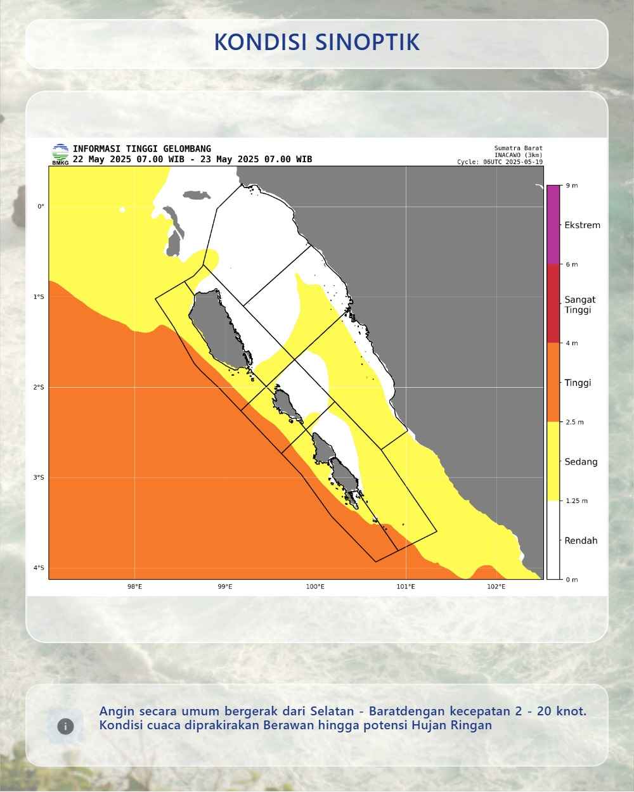
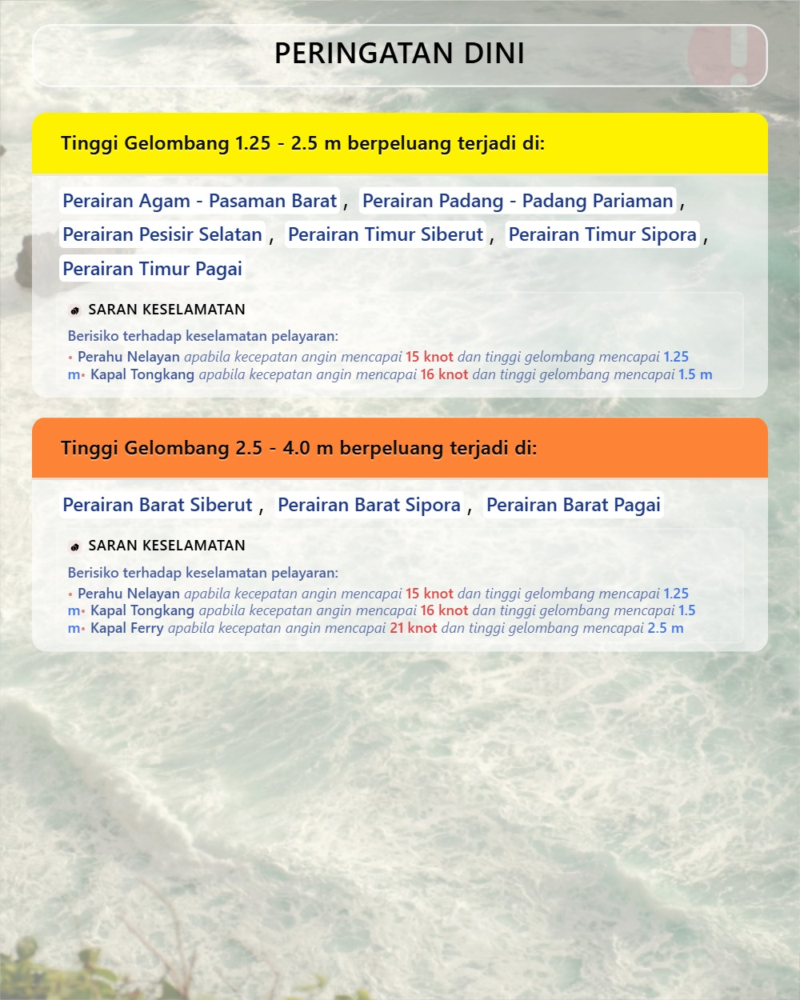
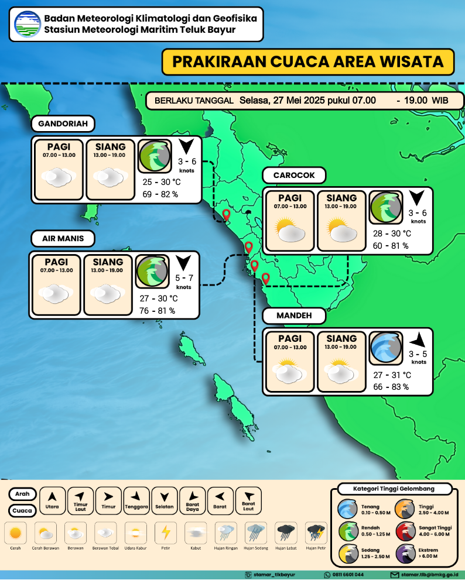
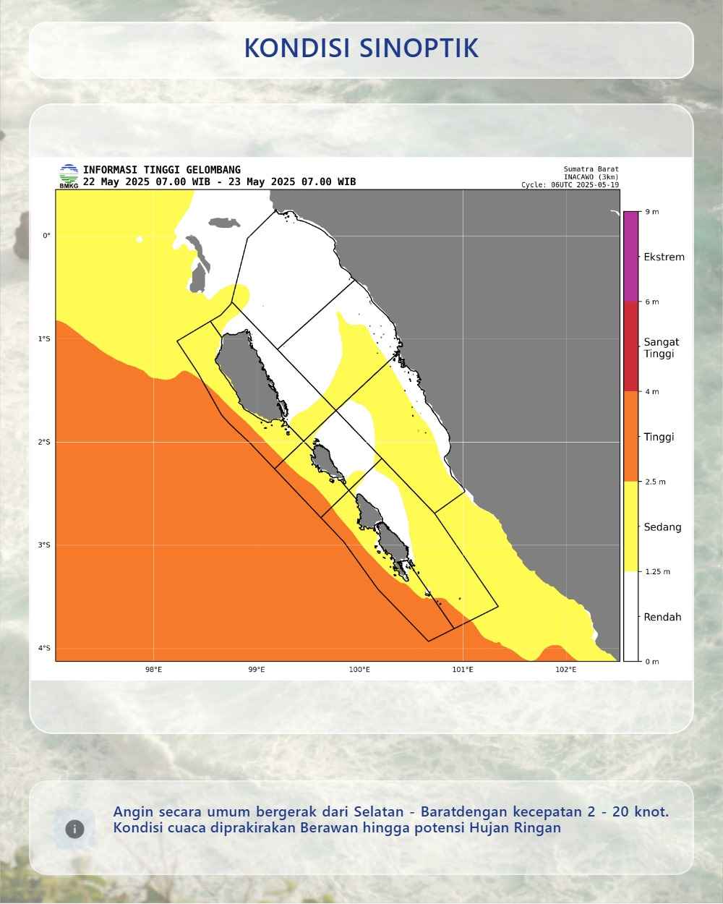
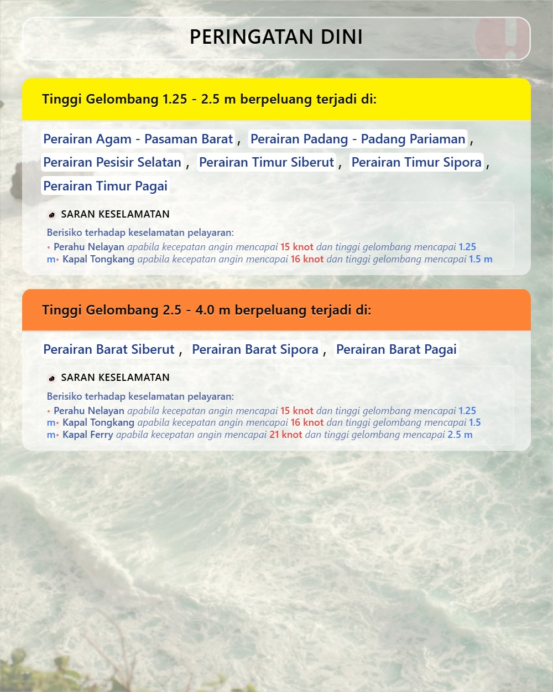
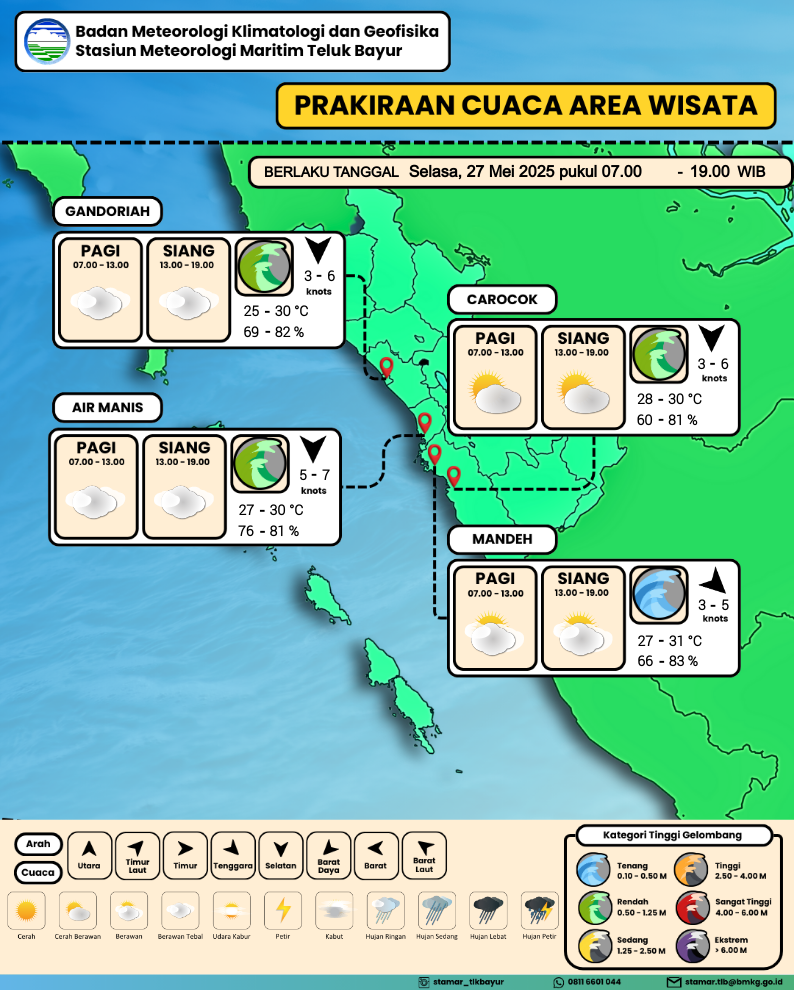

BMKG Maritim Teluk Bayur

PRAKIRAAN CUACA MARITIM
PROVINSI SUMATERA BARAT
Peringatan Dini Cuaca Sumatera Barat
Beberapa wilayah berpotensi terjadi hujan dengan intensitas sedang hingga lebat, disertai angin kencang,
berlaku dari 12 April 2025 pukul 19.00 WIB hingga 14 April 2025 pukul 12.00 WIB.
Selengkapnya →
 




